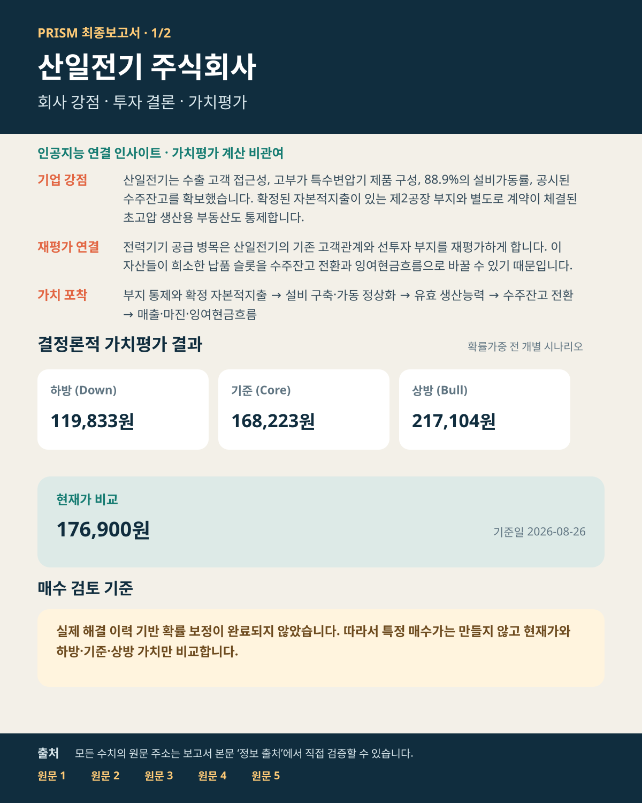
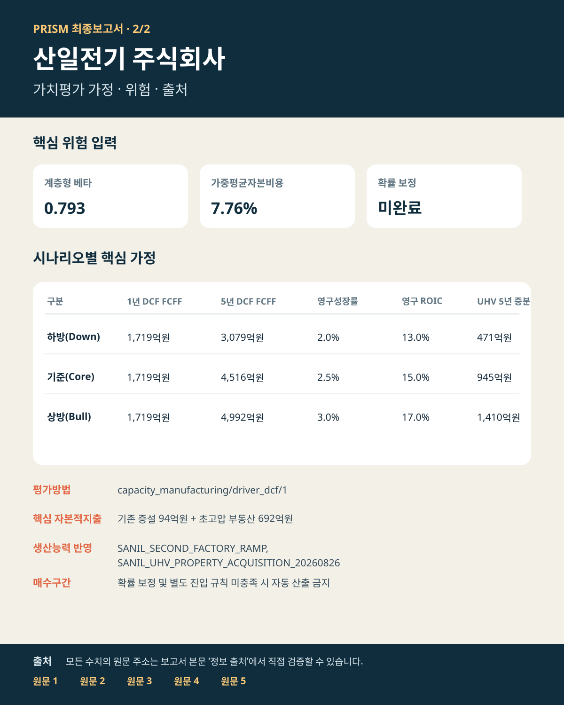

트럼프가 전력망을 국가안보로 묶었다 — 산일전기의 5,026억원 생산 슬롯이 중요해진 이유
위험 공급자 배제 → 검증된 공급망 재편 → 산일전기 신규 생산 슬롯 · 자료 기준 2026년 8월 27일
8월 26일 트럼프 대통령은 미국 대용량 전력망의 외국 공급 위험을 국가비상사태로 규정했습니다. 모든 외국산을 일괄 금지한 것은 아니지만 69kV 이상 계통의 변전소 변압기를 안보심사 대상으로 올렸습니다. 산일전기의 투자 논리는 막연한 정책 수혜가 아니라, 향후 미국 공급자 자격을 확보할 수 있는지와 87.2% 가동률 아래 생산 슬롯의 희소성입니다. 백악관 행정명령 원문
전력망이 국가안보 조달로 바뀌었습니다. 행정명령은 위험 공급자 거래 제한과 사전적격 공급자 선정을 허용합니다. 이는 총수요 증가보다 공급자 자격과 납품 슬롯의 희소성을 높이는 변화입니다. 백악관 행정명령 원문
마진 확대보다 절대이익 증가가 핵심입니다. 신규 부지의 물리적 매출 CAPA는 기존제품 2,936억원과 초고압 2,090억원, 합계 5,026억원입니다. 초고압 마진이 35%여도 전사 영업이익률은 약 40%를 유지합니다.
DCF 반영은 맞지만 전량 인정은 아직 이릅니다. 기준은 기존품목 CAPA 50%만 증분 매출로 인정하고, 회사가 3,000억원 안팎의 순증 CAPA·설비·시험동을 확인할 때 상방 가정을 기준으로 승격합니다. DART 유형자산 양수결정 원문
모든 외국산 장비의 일괄 금지로 해석하지 않습니다. 산일전기의 직접 수혜는 향후 미국 에너지부 규칙과 사전적격 공급자 인정에 달려 있으며, 행정명령 프리미엄은 목표가 산식에 별도로 더하지 않았습니다. 목표가는 확률가중값이 아닌 기준 시나리오 DCF입니다. 현재가 기준일 2026-08-27. 현재가 원문
부지 3.27만㎡가 5,026억원 매출 슬롯으로 연결된다
단위: 억원
95% 유효가동 기준
현재 현금창출력
상반기 영업현금흐름 901억원, 단순 잉여현금흐름 805억원입니다. 영업현금흐름/영업이익은 76.7%, 잉여현금흐름/영업이익은 68.5%입니다. 매출채권+재고−매입채무 증감은 -1.7억원으로 사실상 제자리입니다. 2026년 반기보고서
신규공장 제품별 물리적 매출 생산능력(CAPA)
| 구분 | 계산 | 연매출 CAPA | 신규공장 믹스 |
|---|---|---|---|
| 특수변압기 | 기존제품 유효 CAPA × 76% | 2,231억원 | 44.4% |
| 일반 전력망 변압기 | 기존제품 유효 CAPA × 21% | 616억원 | 12.3% |
| 기타 기존제품 | 기존제품 유효 CAPA × 3% | 88억원 | 1.8% |
| 154kV 초고압 | 2,200억원 × 95% | 2,090억원 | 41.6% |
| 합계 | 기존제품 + 초고압 | 5,026억원 | 100.0% |
상반기 실제 제품 구성 76%·21%·3%를 기존제품 증분에 적용했습니다. 기존제품 명목 CAPA = 7,000억원 × 32,703㎡ / 37,040㎡ × 50% = 3,090억원, 유효 CAPA는 95% 가동을 적용한 2,936억원입니다. 37,040㎡·연 7,000억원은 증권사 추정, 32,703㎡는 공시 부지면적, 초고압 2,200억원은 분석가 중심값입니다. 회사 2분기 IR · LS증권 CAPA 참고자료
2029년 램프업 → 2030년 전량가동 연결
| 연도·단계 | 매출 | 영업이익·률 | 보수적 FCF | 정상화 FCF |
|---|---|---|---|---|
| 2029년 · 램프업 기존 CAPA 50.0% | 15,144억원 | 5,950억원 39.3% | 4,338억원 | 4,511억원 |
| 2030년 · 전량가동 기존 CAPA 100.0% | 16,702억원 | 6,678억원 40.0% | 4,814억원 | 5,066억원 |
전량가동 초고압 마진 민감도 · 마진보다 절대금액
초고압 30.0% → 영업이익 6,574억원·전사 마진 39.4% / 초고압 35.0% → 영업이익 6,678억원·전사 마진 40.0% / 초고압 40.0% → 영업이익 6,783억원·전사 마진 40.6%입니다. 초고압 초기 마진이 낮아도 전사 마진은 39.4~40.6%를 유지합니다. 보수적 FCF는 세후영업이익 + 감가상각 1.0% − 유지투자 1.5% − 신규공장 증분매출의 운전자본 5%이며, 정상화 FCF는 추가 운전자본 투입이 멈춘 상태입니다.
2029·2030 수치는 회사 가이던스가 아니라 공시 부지와 증권사 CAPA를 연결한 분석가 추론입니다. 3쪽 DCF는 연도별 램프·투자비를 별도로 반영하며, 기준은 기존품목 CAPA 50%, 전량은 상방으로 분리합니다.
기준 목표가 237,906원, 현재가 대비 +18.1%
할인율 7.8%
영구성장률 2.5%
151,821원
201,500원
237,906원
287,875원
| 시나리오 | 내재가치 | 현재가 대비 | 가능성* | 전제 |
|---|---|---|---|---|
| 하방 | 151,821원 | -24.7% | 30.0% | 기존품목 CAPA 25%·초고압 CAPA 70%만 매출화 |
| 기준 | 237,906원 | +18.1% | 50.0% | 기존품목 CAPA 50%·초고압 CAPA 100% 매출화 |
| 상방 | 287,875원 | +42.9% | 20.0% | 기존품목·초고압 물리 CAPA를 전부 매출화 |
* 가능성 산식: 하방·기준·상방 상대점수 3:5:2를 정규화해 30%·50%·20%로 표시했습니다. 실제 해결 이력이 없어 목표가를 확률가중하지 않았습니다.
5년차 현금흐름할인법 적용 현금흐름
| 시나리오 | 기존 사업 | 신규 부지 증분 | 평가 사용 합계 |
|---|---|---|---|
| 하방 | 2,608억원 | 471억원 | 3,079억원 |
| 기준 | 3,572억원 | 945억원 | 4,516억원 |
| 상방 | 3,582억원 | 1,410억원 | 4,992억원 |
투자비 반영
부동산 692.5억원에 생산·시험설비 분석가 가정 600억원을 별도 차감했습니다. 기존 제2공장 투자 420억원 전액이 아니라 2027년 이후 공시 잔여액 93.7억원만 미래 현금유출로 반영했습니다.
회수기간 경고
기준 총 프로젝트 투자비 1,292.5억원 ÷ 성숙기 증분 세후영업이익은 약 1.3년입니다. 이례적으로 짧아 이전·창고·시험동·인증비용과 중복매출을 반드시 재확인해야 합니다.
증권사 목표가와의 차이
| 증권사 | 목표가 | 기준 및 평가방법 | PRISM 기준가 대비 |
|---|---|---|---|
| 미래에셋증권 | 250,000원 | 2028년 · 주가수익비율(PER) 기반 | +5.1% |
| IBK투자증권 | 220,000원 | 2027년 · 증권사 목표가 산식 | -7.5% |
| 신한투자증권 | 310,000원 | 2027년 · 2027년 예상 PER 35배 | +30.3% |
| 한국투자증권 | 270,000원 | 2027년 · 2027년 예상 EPS × PER 29배 | +13.5% |
증권사는 예상 EPS에 PER을 적용합니다. PRISM은 부지·설비투자비를 차감하고 생산 슬롯이 매출·영업이익·FCF로 전환되는 연도별 경로를 할인합니다.
한국투자증권 8월 12일 보고서의 2025~2028년 매출 CAGR 32.5%와 2028년 영업이익률 40.7%는 신규공장·초고압 계획을 일부 포함할 가능성이 있습니다. 따라서 증권사 성장률을 신규 부지 CAPA에 기계적으로 더하지 않고, 기존제품 증분을 기준 50%로 제한했습니다.
인공지능 인사이트 · 1,000자 이내 별도 구분
현재 가동률 87.2%와 수주잔고를 함께 보면 신규 부지의 1차 의미는 수요 창출보다 고마진 생산 슬롯 확보입니다. 초고압 초기 마진이 기존 특수변압기보다 낮아도 전사 마진은 크게 훼손되지 않고 절대 영업이익과 현금흐름은 늘어날 수 있습니다. 반대로 총투자비 대비 회수기간이 약 1.3년으로 너무 짧게 계산되는 점은 낙관의 증거가 아니라 이전·창고·시험동·고객인증과 매출 중복을 다시 확인하라는 경고입니다. 따라서 부지는 DCF에서 제외하지 않되 기존품목 CAPA는 기준 50%, 전량 인정은 상방으로 분리했습니다. 이 문단은 인공지능의 연결 인사이트입니다.
상방 승격 조건: 회사가 초고압 2,000억원 이상과 기존품목 약 3,000억원의 순증 CAPA, 생산·시험설비, 고객 인증 일정을 확인할 때. 한국투자증권 8월 27일 보고서
수치와 판단을 바로 확인할 수 있는 원문
클릭 시 원문 이동
자료 기준 2026.08.27
- 01현재 시장가격시장가격 기준일 2026-08-27원문 열기 ↗
- 02초고압 변압기 생산용 부동산 양수계약연결 근거 7개원문 열기 ↗
- 03베타 입력값베타 입력 출처원문 열기 ↗
- 04산일전기 분석가 가치평가 가정연결 근거 63개원문 열기 ↗
- 05산일전기 위험 입력 출처 등록부 · 가중평균자본비용 입력값 · 베타 입력값연결 근거 4개원문 열기 ↗
- 06산일전기 2025년 사업보고서 · 가중평균자본비용 입력값 · 기업 식별정보 · 베타 입력값연결 근거 26개원문 열기 ↗
- 07증권사: 한국투자증권목표가 발표일 2026-08-27원문 열기 ↗
- 08증권사 자료 탐색가치평가 입력과 분리한 사실 탐색·교차확인 자료원문 열기 ↗
- 09증권사 자료 탐색 · 증권사: 미래에셋증권가치평가 입력과 분리한 사실 탐색·교차확인 자료 · 목표가 발표일 2026-08-07원문 열기 ↗
- 10산일전기 2026년 2분기 기업설명자료연결 근거 8개원문 열기 ↗
- 11증권사 자료 탐색 · 증권사: 신한투자증권가치평가 입력과 분리한 사실 탐색·교차확인 자료 · 목표가 발표일 2026-08-11원문 열기 ↗
- 12증권사 자료 탐색 · 증권사: IBK투자증권가치평가 입력과 분리한 사실 탐색·교차확인 자료 · 목표가 발표일 2026-08-10원문 열기 ↗
최종 요약 이미지 2장


추가 원문: 백악관 행정명령 원문 · 2026년 반기보고서 · 회사 2분기 IR · DART 유형자산 양수결정 원문 · 한국투자증권 8월 12일 보고서 · 한국투자증권 8월 27일 보고서 · LS증권 CAPA 참고자료. 상세 계산은 감사용 부속자료에 보존했습니다. 본 자료는 공개자료를 바탕으로 한 조사 보고서이며 최종 투자판단은 독자에게 있습니다.